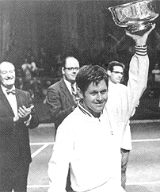

← Bài trước: Thoughts on Andre Agassi | 🏠 Mental Game Trang chủ | Bài tiếp: → Titans of Tennis in the Zone
Ý kiến về cuốn sách "Acing Depression" của Cliff Richey
Ý kiến về cuốn sách "Acing Depression" của Cliff Richey
Bởi Allen Fox, Ph.D.

Cliff Richey: một tay vợt vô địch với những bí mật mà đồng đội không bao giờ nghi ngờ.
Tôi nghĩ cuốn sách của Andre Agassi khá trung thực và sâu sắc, nhưng nó vẫn kém xa so với cuốn sách mới của Cliff Richey, "Acing Depression".
Cliff là một tay vợt gần như vô địch trong thập niên 1970, đạt vị trí số 1 tại Mỹ, tiến vào vòng chung kết các giải Grand Slam nhưng không giành chiến thắng nhiều. Tuy nhiên, anh đã đánh bại những tay vợt hàng đầu của thời đại đó - Laver, Newcombe, Connors, Smith, Rosewall, Roche, Emerson, v.v. Cliff và chị gái Nancy là cặp anh em duy nhất từng đạt vị trí số 1 tại Mỹ!
Trong cuốn sách, Cliff mô tả quá trình tư duy của mình khi trở thành một tay vợt vô địch và sau đó, khi anh bị trầm cảm nặng nề trong một cách thức cực kỳ rõ ràng, sâu sắc và sống động. Người đọc có thể ảo tưởng đi cùng trong tâm trí của Richey trong suốt những thành công và đau khổ của 50 năm qua. Mô tả của anh rất chân thực đến mức bạn có thể cảm nhận được những gì anh cảm nhận. Và bạn chắc chắn có thể thấy những gì anh nhìn thấy.
Thắng và Khổ
Cuốn sách theo dõi quá trình phát triển của Cliff như một tay vợt trong một gia đình có mục tiêu thành công, đầy nhiệt huyết, gắn bó nhưng lại có phần cô lập và bị ám ảnh. Anh mô tả nền tảng gia đình có bệnh lý tâm thần và chi tiết khủng khiếp về những suy nghĩ và cảm xúc mà anh phải trải qua khi thi đấu với tư cách là một tay vợt hàng đầu trong khi dần dần rơi vào một ác mộng của lo âu, tự ti, tự ghét và tuyệt vọng.

**Cliff với cha mình, huấn luyện viên và huấn luyện viên đại học George Richey, chị gái và mẹ.**
Anh chi tiết hóa những tác động khủng khiếp mà bệnh của mình gây ra cho gia đình và những người xung quanh. Nó cung cấp một ví dụ rõ rệt về khe hở có thể tồn tại giữa thành công nổi tiếng/ngoại hình và hạnh phúc.
Cuốn sách đặc biệt thú vị với tôi vì tôi đã dành thời gian với Cliff trên tour nhưng không biết gì về những vấn đề cá nhân của anh. Tôi đã ở trên tour với Cliff vào những năm 1960 và coi anh như một người bạn, không phải là bạn thân, mà là một người đàn ông thông minh và hài hước mà tôi luôn thích dành thời gian cùng.
Vào thời điểm đó, tour là một nhóm nhỏ - một nhóm anh em trong làng quần vợt - chúng tôi chơi hầu hết các giải đấu cùng nhau, luyện tập cùng nhau và chia sẻ trải nghiệm. Chúng tôi đều là bạn bè.
Vào năm 1966, chúng tôi thậm chí còn cùng nhau đi du lịch đến Nam Mỹ trong trận đấu Davis Cup và đến Australia cho các giải đấu.

**Cliff ngay sau khi giành chiến thắng tại giải đấu đầu tiên của mình.**
Tuy nhiên, cho đến khi đọc cuốn sách, tôi không biết gì về những vấn đề tâm lý của Cliff hoặc rằng anh xem những đồng đội của mình nhiều hơn là những kẻ thù tiềm năng.
Có lẽ tôi nên nghi ngờ điều này khi tôi được xếp lịch thi đấu với Cliff ở vòng hai của US Open, như tôi nhớ, vào khoảng năm 1970. Tôi đã nghỉ thi đấu trên tour trong khoảng hai năm do chấn thương hông mãn tính. Tôi chỉ thi đấu một phần và không thực sự là một mối đe dọa cạnh tranh với Cliff, ít nhất là theo suy nghĩ của tôi.
Buổi tối trước trận đấu của chúng tôi, cả hai chúng tôi đều may mắn là rời khỏi West Side Tennis Club cùng lúc để trở về khách sạn. Vào những ngày đó, chúng tôi đi tàu điện ngầm trở lại Manhattan (West Side Tennis Club nằm ở Long Island), và ga nằm cách đó vài khối ở phía bên kia thị trấn Forest Hills.
Khi rời khỏi câu lạc bộ, tôi đang mong đợi một cuộc đi bộ thú vị, một cuộc trò chuyện và vài cười với người bạn cũ mà tôi chưa gặp nhiều kể từ khi rời khỏi tour. Thay vào đó, Cliff đã băng qua phía bên kia đường và không nói chuyện với tôi. Đó là một dấu hiệu của những gì đang diễn ra. Nhưng tôi chỉ nghĩ đó là thú vị (ha, ha thú vị) và bỏ qua điều đó như một phần của tính cách cạnh tranh quá mức của Cliff.

**Cliff và Nancy rất thân thiết - và là cặp anh em duy nhất từng đạt vị trí số 1 tại Mỹ.**
Cliff rất thông minh, đầy nhiệt huyết và hài hước. Mặc dù Cliff chưa tốt nghiệp trung học, tôi thích anh vì anh rất thông minh và có một cảm giác hài hước kỳ lạ.
Vào những ngày đó, phần lớn sự hấp dẫn của tour là chính những tay vợt, và chúng tôi đặc biệt đánh giá những nhân vật kỳ lạ, trong đó có nhiều người, và Cliff chắc chắn là một trong số đó.
Mục tiêu chính là có vui, và chúng tôi không coi những tính cách kỳ lạ quá nghiêm trọng. Chúng tôi sử dụng chúng để cười và chúng tôi cũng chơi theo một phần nào đó. Mọi người đều có biệt danh. Cliff được gọi là "The Bull" vì tính cạnh tranh một chiều, kiên định, hung hăng của anh. Tôi được gọi là "Commander Of the Space Patrol", được đặt tên bởi người Úc vì quan điểm khoa học của tôi về mọi thứ.

**Cliff với vợ Mickey đã ở bên anh trong 40 năm trước khi ly dị gần đây.**
Thực tế không ai bao giờ được gọi bằng tên thật của họ. Tony Roche được gọi là "Rochie", Pancho Gonzales được gọi là "Gorgo", Rod Laver được gọi là "Rocket", Chuck McKinley được gọi là "Stump", v.v. Vì vậy, tôi nghĩ "The Bull" chỉ đang chơi theo nhân vật tour của mình khi băng qua đường trước trận đấu của chúng tôi tại Forest Hills. Không phải cho đến khi đọc cuốn sách của anh mà tôi mới nhận ra rằng tôi thực sự là kẻ thù. Tôi nghĩ anh đang đùa!
Sự thông minh vượt trội của Cliff thể hiện trong cuốn sách của anh trong việc sử dụng liên tục các ví dụ về quần vợt để làm nổi bật những điểm của anh về trầm cảm. (Tôi nói điều này vì theo quy tắc chung, để tạo ra các ví dụ có ý nghĩa, cần có một quan điểm rộng rãi để xác định các đặc điểm chung.)

**Cuốn sách là một cuốn sách quần vợt tuyệt vời nhưng cũng cung cấp thông tin hữu ích về điều trị.**
Cliff liên tục so sánh các chiến lược của mình trong việc chống lại trầm cảm với các chiến lược của mình trong việc giành chiến thắng trong các trận đấu quần vợt. Anh rất phân tích. Anh mô tả chính xác những đặc điểm tâm lý làm cho anh trở thành một tay vợt xuất sắc - cách anh luyện tập, cách anh phát triển cú giao bóng tốt hơn, cách anh thích nghi các chiến lược của mình đối với những tay vợt nhất định để chuyển đổi từ thua sang thắng, và cách anh có thể kiên trì với một ý tưởng để giải quyết một vấn đề ngay cả khi không có cải thiện trong thời gian ngắn - và áp dụng chúng để chống lại và đánh bại trầm cảm.
Trong cuốn sách, chúng ta học được rất nhiều về trầm cảm và cách điều trị nó. Cliff cho chúng ta biết nhiều thông tin hữu ích về mối quan hệ của trầm cảm với các đặc điểm tính cách rối loạn ám ảnh-bất lực, lo âu và căng thẳng. Anh nói về cách trầm cảm bắt đầu dần dần và cách những thay đổi đáng kể trong cuộc sống của mình có thể làm cho nó tăng tốc. Anh đi sâu vào chi tiết về các liệu pháp - tư vấn và thuốc - và nói về cảm giác như thế nào khi uống các loại thuốc chống trầm cảm khác nhau và nhận tư vấn và cách mỗi loại hoạt động tốt như thế nào. Tất cả được xen kẽ với những câu chuyện thú vị về các trận đấu lớn và cuộc sống trên tour quần vợt - chỉ là một cuốn sách tuyệt vời để đọc. (link để đặt hàng.)
Đọc thêm từ Allen!
Hãy ghé thăm anh tại www.allenfoxtennis.net
|  | Quần vợt là môn thể thao khó nhất về mặt tinh thần do bản chất cá nhân của nó khiến thắng và thua cảm thấy quan trọng hơn chúng thực sự là. Trong cuốn sách mới này, Allen đưa ra các giải pháp đã được chứng minh của mình đối với các vấn đề như bị kẹt, giảm căng thẳng, kết thúc trận đấu và phát triển tự tin. Dựa trên sự nghiệp thi đấu và huấn luyện thành công suốt đời, đây là một cuốn sách bắt buộc phải đọc cho tất cả những tay vợt cạnh tranh. |
| [ để | |
| Đặt hàng](http://www.amazon.com/Tennis-Winning-Mental-Allen-Fox/dp/0615407765/ref=sr_1_1?ie=UTF8&qid=1336083459&sr=8-1). |
|  | rất đáng ưa thích hơn thua. Trong cuốn sách mới của anh, The |
| Winner's Mind, Allen trình bày một kế hoạch bước theo bước | |
| ban đầu để thành công trong bất kỳ nỗ lực nào của cuộc sống, dựa trên | |
| những quan sát cá nhân và rất cá nhân của anh về | |
| sự nghiệp của cả những tay vợt quần vợt hàng đầu và những doanh nhân | |
| thành công. Điểm cuối cùng là ngay cả khi bạn không phải là | |
| một nhà vô địch sinh ra - và chỉ một phần trăm nhỏ chúng ta là - bạn | |
| vẫn có thể sử dụng các chiến lược thành công của những nhà vô địch để | |
| làm nghiêng lợi thế về phía bạn. Viết với sự trung thực và hài hước khắc nghiệt, Fox trình bày các đặc điểm tâm lý chung của những người chiến thắng trong thể thao và trong cuộc sống. Anh giải thích vai trò quan trọng của trí tuệ hơn là cảm xúc. Anh phân tích cuộc đấu tranh giữa tham vọng và sợ hãi và nỗi sợ hãi xâm nhập và phổ biến | |
| sợ thất bại làm suy yếu rất nhiều người. Sau đó | |
| anh nêu cách đối mặt và vượt qua những nỗi sợ này trong cuộc sống và sự nghiệp của mình, ngay cả khi chúng ban đầu là vô thức. | |
| Phải đọc từ một trong những nhà tư tưởng vĩ đại trong quần vợt, và | |
| một người Phục hưng trong cuộc sống. [ để | |
| Đặt hàng](http://www.tennis-warehouse.com/descpage-MIND.md). | |
| Để mua cuốn sách này, bạn cũng có thể gửi séc 17,95 đô la | |
| cho Allen Fox, 1120 Inverness Place, San Luis Obispo, CA. | |
| 93401. Giá bao gồm phí vận chuyển. |
|  | nhà phân tích sâu sắc trong quần vợt hiện đại. Một tay vợt hàng đầu |
| thế giới từ những ngày huy hoàng trước quần vợt mở | |
| Fox đã chơi nhiều tay vợt huyền thoại, bao gồm | |
| Roy Emerson, Rod Laver, Stan Smith, và Arthur | |
| Ashe. Tại Pepperdine, anh đã phát triển chương trình quần vợt nam | |
| thành một đối thủ hàng đầu cho các danh hiệu quốc gia, | |
| và đưa cho Brad Gilbert những hiểu biết đã trở thành | |
| cơ sở cho "Winning Ugly". Cuốn sách Think to Win | |
| của anh là một tác phẩm kinh điển hiện đại. Anh cũng đã xuất hiện trong một loạt | |
| video được hoan nghênh, bao gồm Pro Secrets of Match | |
| Play và Allen Fox's Ultimate Tennis Lesson. | |
← Bài trước: Thoughts on Andre Agassi | 🏠 Mental Game Trang chủ | Bài tiếp: → Titans of Tennis in the Zone